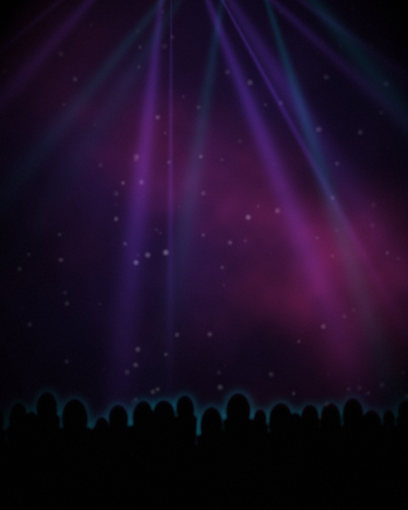

Biografia
Cinquant'anni
di suono
Torino, 19 settembre 1960. Radio, elettronica, consolle: tre mestieri, una sola ossessione.
Tutto comincia nel 1976, con la radio. In piena adolescenza Guido studia radiofrequenza, elettronica e microelettronica: le tecnologie che in quegli anni stavano cambiando le telecomunicazioni. Da lì nascono le fondamenta di tre carriere parallele — speaker radiofonico, sound engineer, DJ e producer.
Dopo aver ascoltato Radio Montecarlo in modulazione di ampiezza — la madre di tutte le radio libere — comincia a parlare al microfono di Radio Toscana Sound. Ci resta fino al 1981, poi passa a Radio Toscana Centro-Valdinievole a Pescia: è lì che il personaggio dello speaker prende forma davvero. Nel 1984 diventa speaker e direttore di Radio Alfa 99 a Porcari.
Presto nasce l'esigenza di avere un'emittente sua. Due anni dopo acquista Radio Toscana, la sposta ad Altopascio, la dota delle tecnologie più moderne del momento e la porta a un livello difficile da eguagliare per la concorrenza.
Nello stesso periodo arriva l'offerta per una radio di Pisa: Radio Jamaica. La compra, la trasferisce ad Altopascio, ne ridisegna il genere musicale e costruisce un piano d'ascolto preciso. Radio Jamaica diventa il grande picco della sua carriera: dieci anni di riconoscimenti regionali e nazionali, 10 nomination e il Gran Premio della Radio nel 1993, fino al City Square di Milano, faccia a faccia con i più grandi network italiani. A fine 2001 è la prima emittente della Toscana.
La carriera di sound engineer e DJ corre in parallelo, sempre accanto a quella radiofonica. Dalla seconda metà degli anni Ottanta suona nei night club di punta della Toscana notturna: il Moulin del Topo di Firenze, il Bimbo's di Pistoia, il celebre All Music Tramp di Montecatini Terme. È l'esperienza del night a dargli i tecnicismi e le rifiniture che porteranno a un modo di fare musica rivolto esclusivamente al suo pubblico.
Il suo repertorio non si ferma al club: musica leggera, folk, revival anni 70 e 80, disco anni 90 e 2000, fino alla dance commerciale di oggi. È in questo universo che prende forma la figura del deejay professionista specializzato in dancing.
Per lui il deejaing è arte, passione e tecnica mescolate insieme. Ha una visione futuristica dei generi che animano i disco-dancing: convinto che il progresso non si sia mai fermato, punta a un sound nuovo, capace di soddisfare un target universale. La passione è l'elemento che distingue le sue serate, e si riversa per intero sul suo pubblico — il vero e unico protagonista.
Iscritto alla SIAE, collabora oggi con case discografiche italiane come Montefeltro Edizioni e Bernardi Records. Ha firmato brani come La Verdad, Linda Muchachita, Sole e Mare, Tango del Sol, E Va, Love Me Tonight, Arabo Felice, Tema di Laura e molti altri.
Perché la musica è l'unica lingua universale che abbiamo. L'unica vera lingua che tutti possono comprendere.
→ assets/img/guido.jpg

In breve
Tappe
La linea
del tempo
La radio, prima di tutto
Studi su radiofrequenza, elettronica e microelettronica. Nasce l'interesse che porterà al microfono e alla consolle.
Radio Toscana Centro-Valdinievole
Dopo Radio Toscana Sound, l'esperienza di Pescia definisce il personaggio dello speaker radiofonico.
Radio Alfa 99 — Porcari
Speaker e direttore. Pochi anni dopo acquista Radio Toscana e la trasferisce ad Altopascio.
Gran Premio della Radio
Radio Jamaica colleziona 10 nomination e il Gran Premio. Il City Square di Milano la mette a confronto con i grandi network nazionali.
I night club
Resident al Moulin del Topo (Firenze), al Bimbo's (Pistoia) e all'All Music Tramp (Montecatini Terme). Poi la Discoteca Concorde di Chiesina Uzzanese.
Prima in Toscana
Radio Jamaica raggiunge il primo posto tra le emittenti radiofoniche toscane.
Produzioni e dancing
Iscritto SIAE, produce con Montefeltro Edizioni e Bernardi Records. Resident del sabato al Trocadero Village di Viareggio e alla Discoteca Sombrero di San Miniato.
Dove ha lasciato il segno